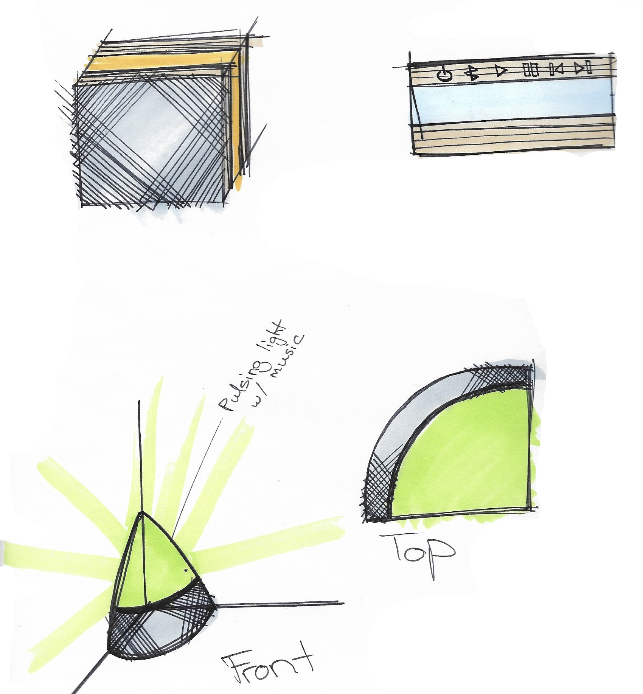
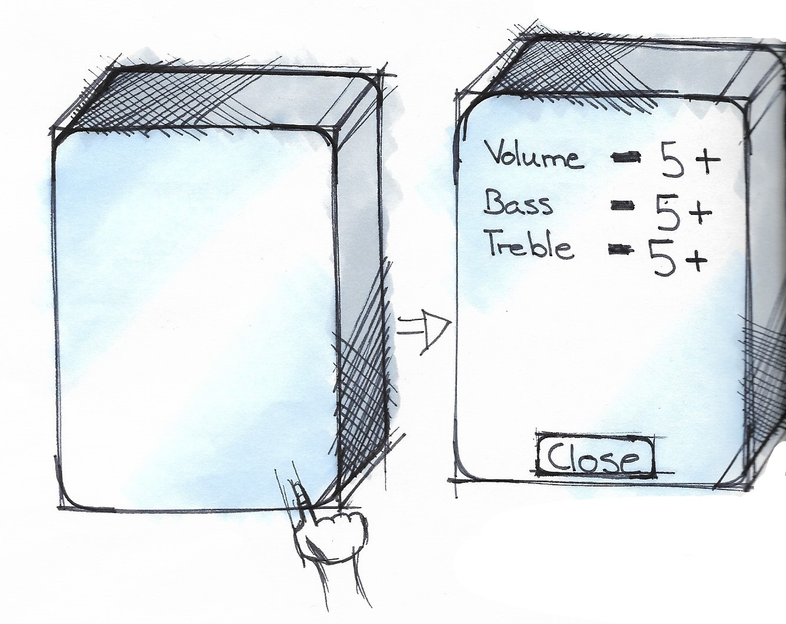

Speaker

This project was focused on creating a new bluetooth speaker. There are so many products in this area already, so I set to work thumbnailing ideas for more unconventional speakers



I liked the idea of combining the speaker with a portion to display lights, but recognized that this design was very stationary. As someone who loves music, I use my speaker beyond the confines of my room, and so I sought to expand this concept so that users would have music on the go as well.